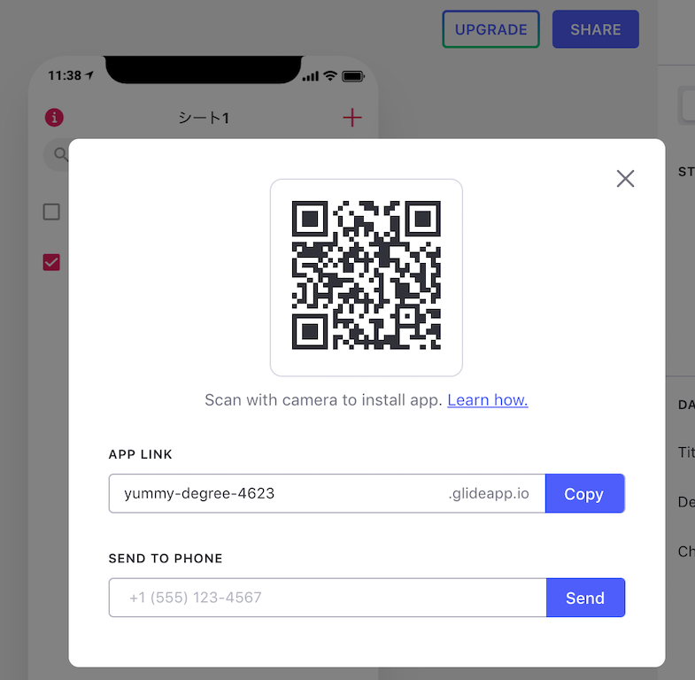

## <div style="border: thin solid; border-radius: 8px; padding: 8px; background: white;"><font color="midnightblue">Glideではじめる<br>ノンコードプログラミング</font></div> [座駆動LT大会オンライン20200725](https://gbdaitokai.connpass.com/event/182090/)(2020/07/25) @furandon_pig<br> <span style="font-size:70%;">https://furandon-pig.github.io/study-memo/docs/zadrvnlt/20200725.html</span>
### 自己紹介 * [@furandon_pig](@furandon_pig) * 岡山には行ったことは無いのですが、前に[岡山版 コロナウイルス対策サイト](https://okayama.stopcovid19.jp/)への[プルリク](https://github.com/stopcovid19-okayama/covid19/pull/185)を出したりしたことがあります。
### 今日の内容 * Glideでアプリを作成する話 * Software Design 2020年7月号 * Code for Fuchuの紹介記事 * [府中お弁当プロジェクト](https://www.facebook.com/codeforfuchu/posts/2840483112710719/) * [https://fuchubentomap.glideapp.io/](https://fuchubentomap.glideapp.io/)
### Glideとは？ * [Glide](https://www.glideapps.com/) * アプリケーション作成フレームワーク * Googleシートをデータソースとして利用する * UI部分はGlideで作成できる * アプリの[テンプレート](https://www.glideapps.com/templates)も用意されている
### Glideの料金プラン * Glideの[pricing](https://www.glideapps.com/pricing) * Free,Pro,Organization,Enterpriseがある * 試してみる分にはFreeプランでOK * 加えてGoogleアカウントが必要 * GlideにSign inする際に使用する
### 実際にアプリを作ってみる * ToDoアプリ * 手順 * Googleシートを作成する * 必要なカラムを用意する * ステータス * ToDo * 日付 実際に作成してみます😃
### アプリの公開と削除 * Glideの「SHARE」ボタンをクリック * ドメインが自動生成されてデプロイされる * Glideのプロジェクト削除でアプリも削除される
### アプリの公開 
### スマートフォンでの表示例
### アプリの削除
### さらに実用的なアプリを考えてみる * connpassイベント確認アプリ * connpass WebAPIと組み合わせる * (少しだけ)コーディングが必要 こちらも実際に作成してみます😃
### Glideでのアプリ作成 * UI部分はサクッと作成できる * コーディングは一切不要 * データ部分 * Googleシートをデータソースとして使用 * データ設計の重要度が高まる感じ * 必要に応じてコーディングが必要 * アプリとデータを分離して考えられる
### より具体的な例で考えてみる * [Go To トラベル事業 Q＆A集（７月22日時点）](https://www.mlit.go.jp/kankocho/content/001354719.pdf) * (こちらも実際に作成してみます)
### データの整理が重要 * データが整理されていればいるほど、Glideでの扱いがラクになる * 「ノンプログラミング」🤔 * UIまわりでは不要 * データの取得・加工・整備でのプログラミング * 必要かつより重要になってくる * ヘンテコなデータ構造だとGlide側に無理が生じる
### Glideでアプリ化するということ * 一定の機能範囲内であればGlideでアプリ化するのは便利 * データ構造を整理(設計)することがポイント * Glideでアプリ化するということ * オープンデータとの組み合わせによる効果が期待できる * オープンデータが活用される * ちゃんとデータが整理されるようになる
### データの整理に関して * [５スターオープンデータについて](https://www.soumu.go.jp/main_content/000353999.pdf)(総務省)(pdf) * オープンデータの公開レベルをレベル1～レベル5までの5段階に定めたもの。 * 機械判読のしやすさでランク付け。 * 「レベル2」のオープンデータ * Glideから利用できる形態 * データを加工(変形)してレベル2にするのもアリ
### Glideでのアプリ化を通じて<br>オープンデータの<br>利活用を促進できそう！😃
### まとめ * Glideによるノンプログラミングでのアプリ作成 * 具体的なアプリ作成例 * データの取得・加工 * プログラミングの余地が残る * データ構造の整理整頓がポイント * オープンデータの利活用促進につながるかも みなさまもぜひGlideを通じて、面白いデータ、<br>有用なデータのアプリ化を試してみてください！
### ご清聴ありがとうございました😃